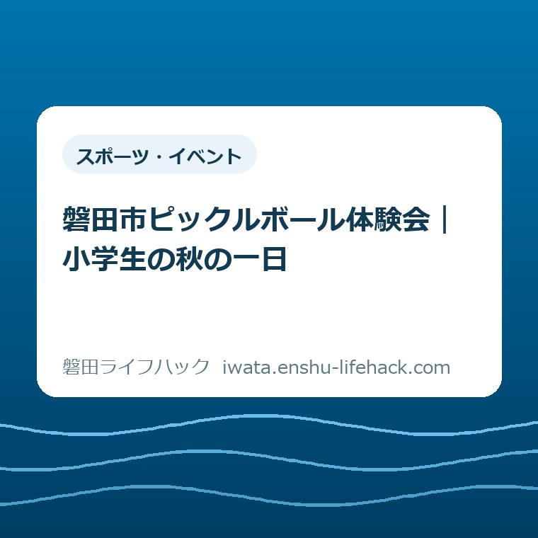
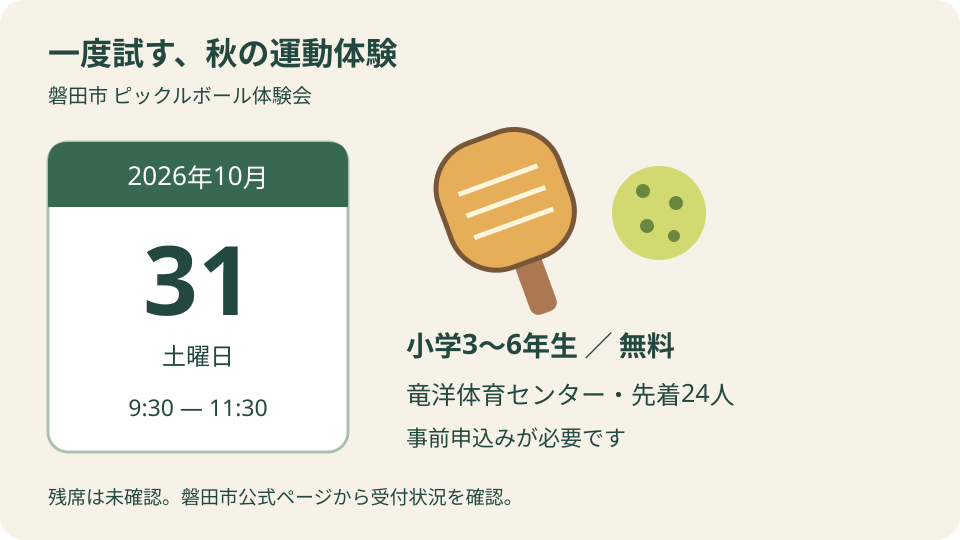
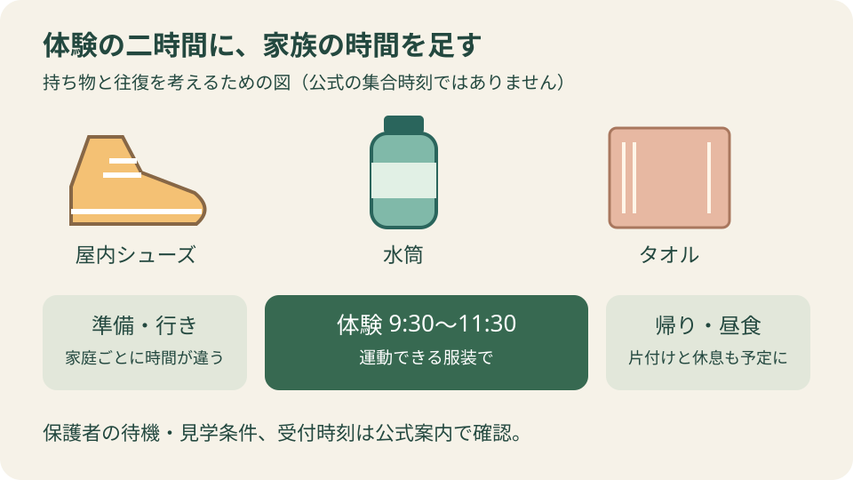

スポーツ・イベント
磐田市ピックルボール体験会｜小学生の秋の一日

この記事の要点
Q. 習い事を増やす前に、一度だけ新しい運動を試せる？
A. 2026年10月31日（土）9時30分～11時30分、竜洋体育センターで小学3～6年生向けの無料体験会が開かれます。定員は先着24人、申込開始は10月5日正午。残席は未確認です。継続する習い事を決める前の一回として考え、まず磐田市公式ページから受付状況を確認してください。
送迎まで含めて、小学生の秋の一日を考える
小学3～6年生が対象でも、参加できるかは申込状況や個別の条件で変わります。保護者の見学や待機、配慮が必要な場合の対応は、この記事だけでは判断できません。最初にその線を引いたうえで、磐田市のピックルボール体験会を紹介します。
子どもに新しい運動をさせたい。でも、毎週の送り迎えを増やせるかは別の話です。仕事の予定を見て、きょうだいの用事を合わせ、洗濯や昼食の段取りもつける。保護者は、会場に着く前から時間と手間を使っています。無料の催しでも、その負担がなくなるわけではありません。
私は大石浩之（磐田市／不動産業）です。この記事では、競技の上達法より、家庭の予定にどう置くかを考えます。新しい習い事を決める記事ではなく、一回の体験を選ぶための記事です。子どもが続けたくなるかも、送迎を続けられるかも、参加前に答えが出なくて構いません。
秋の休日に何かを足すなら、足した後の家族の動きまで見たい。体験会を知った日に道具を買い、年間の予定まで決める必要はありません。この記事を読み終えた時点の一歩は、公式案内から受付状況を確認することに絞ります。申し込むかどうかは、その結果を見てからです。
開催条件は、日時・学年・申込みを一組で読む
磐田市公式「ピックルボール体験会 ～マルチスポーツひろば～」は、2026年10月1日更新の案内です。2026年10月10日に確認した開催条件を下表に整理しました。10月31日は土曜日です。学校や家庭の予定がないことまで、市の案内が保証しているわけではありません。
| 開催日 | 2026年10月31日（土曜日） |
|---|---|
| 開催時間 | 9時30分～11時30分 |
| 会場 | 竜洋体育センター |
| 対象 | 小学3年生～6年生 |
| 費用・定員 | 無料、先着24人 |
| 申込み | 必要。10月5日（月曜日）12時から、公式案内の申込フォームなどで受付 |
| 持ち物等 | 運動できる服装、屋内シューズ、水筒、タオル |
開催時刻と申込開始時刻は別です。「10月31日に行けば参加できる」とは読めません。事前申込みが必要な催しなので、会場へ直接向かう前に受付の確認が要ります。申込開始日はすでに過ぎていますが、それだけを根拠に満員とも受付中とも判断できません。
市公式の公開本文には残席数が載っていません。先着24人という数字は募集の上限であり、2026年10月10日に24人分の空きがあるという意味ではありません。この記事では、残り人数や申込完了までの所要時間を推測して書かないことにします。
競技について、市は卓球・バドミントン・テニスの要素を組み合わせたスポーツと説明し、未経験者の参加を歓迎しています。経験の有無で最初から諦める必要はなさそうです。ただし、誰でもすぐ上手になる、運動が苦手でも必ず楽しめる、とまでは案内から言えません。
私が意外に感じたのは、募集対象が「小学生全員」ではなく3～6年生に限られる点です。同じ家のきょうだいでも、対象に入る子と入らない子がいます。家族で一緒に出かける計画と、体験に参加できる人数は分けて考えたほうが、当日の行き違いを減らせます。

竜洋体育センターは、施設名と住所をセットにする
磐田市公式の施設ガイドでは、竜洋体育センターの所在地は磐田市平間1613-1です。会場の確認には、イベント案内と施設ガイドを組み合わせられます。地図を開くときは「竜洋」だけで探さず、体育センターという施設名と住所を最後まで合わせるのが確実です。
私なら、送迎を交代する家族には催しの名前だけを渡しません。会場名、住所、終了予定時刻を同じメモに置きます。朝に送る人と昼に迎える人が違うときほど、頭の中の地図が同じとは限りません。これは体験談ではなく、連絡を一度で伝えるための私の提案です。
施設ガイドには駐車場24台、第2駐車場80台と記載があります。第2駐車場は竜洋なぎの木会館との共用です。ただし、掲載台数は体験会の参加者向けに確保された台数ではありません。当日の空きや利用できる場所、誘導の有無は、この数字からはわかりません。
「定員24人だから車も24台で足りる」と結び付けるのは避けたいところです。同行者や他の施設利用もあり、人数と駐車台数は別の情報です。自宅からの移動時間を一律に何分とも書けません。磐田市内でも出発する場所が違い、道路の状況で変わるためです。
スポーツ施設を使うこと自体が初めてなら、磐田市のスポーツ施設の選び方も判断の補助になります。ただし、施設を借りる一般の手続きと、今回の体験会への申込みは別です。施設予約の画面を見つけても、体験会の参加受付が済んだことにはなりません。
準備は持ち物から。道具の購入は急がない
体験会の公式持ち物欄には、運動できる服装、屋内シューズ、水筒、タオルが挙がっています。私なら、まず家にある物で揃うかを見ます。参加料が無料でも、準備のために何を買うかで家計の負担は変わります。催しを知った勢いで買い物まで進めなくてよいと思います。
屋内シューズは、外履きの靴とは分けて用意する物です。学校で使う靴を持って行けるか、家庭にある靴が使えるかは、それぞれの管理や使用条件によります。この記事では特定の靴を指定しません。判断に迷う物は、イベント側の案内に合わせて確かめる範囲です。
パドルなど競技用具の購入指示は、確認した公式本文の持ち物欄にはありません。一方で、貸出品の種類や数量までは確認できていません。「全員分が必ず借りられる」と補って書くこともできません。用具が気になる場合は、購入前に案内の問い合わせ先で確認するほうが無駄を減らせます。
水筒とタオルは、持っているだけで準備が終わるわけではありません。帰宅後には中身の片付けや洗濯が残ります。私は、その分まで一日の予定に入れてよいと考えます。親が家事を後回しにして成立する体験なら、その負担も家族の中で見えるようにしておきたいのです。
子ども自身には、靴やタオルを一緒に袋へ入れてもらう程度からでよいと思います。全部を自分で管理する練習まで、一度の体験日に詰め込まなくて構いません。競技を初めて試す日に、準備も片付けも完璧にするという別の課題を増やす必要はない、というのが私の考えです。
良い点は、継続の約束より先に体を動かせること
一回の無料体験会は、運動を続けるか迷っている家庭にも検討しやすい入口です。私は、月々の予定を決める前に、子どもの反応を確かめる機会がある点を評価します。競技名だけではわからない感触を、自分の体で確かめられることに意味があります。
案内に未経験者を歓迎する言葉があることも、初めての子には判断材料になります。保護者がルールを全部覚えてから連れて行かなければならない、と先回りして抱え込まずに済みます。ただし、当日の進め方や指導の細かさは未確認です。参加すれば不安がすべて消えると約束するものではありません。
私が考える体験の成果は、上手に打てた回数だけではありません。面白かった動きが一つわかる、思っていた競技と違ったと気付く、もう一度やりたいかを言葉にする。それも材料です。合わなかったという反応を、参加が無駄だった証拠にしなくてよいと思います。
小学生の一回の体験と、学校生活に結び付く継続的な活動は、検討する時間の幅が違います。将来の活動との区別を整理したい家庭には、SPO☆CUL IWATAと休日部活の違いの記事があります。今回の体験会から特定のクラブに入る決まりがある、という紹介ではありません。
注文したい点は、保護者の二時間も見える案内
保護者が予定を決めるには、子どもの活動時間に加えて、待つ場所や付き添いの条件も材料になります。公式本文で確認できた開催条件と、家庭が知りたい当日の動きには差があります。私は、その差を家庭の想像だけで埋めなくて済む案内を望みます。
たとえば、保護者が会場を離れてよいのか、見学できるのか、対象学年ではないきょうだいと待てるのか。確認した公開本文だけでは判断できません。書かれていないことを禁止と扱うのも、自由と扱うのも違います。必要な条件がある家庭ほど、申込みの判断に関わる点です。
開始の9時30分と、受付に来てほしい時刻が同じかも未確認です。「開始10分前集合」などの数字を、この記事で作ることはしません。申込後に別の案内が届く場合は、その指示に従うことになります。施設の開館時刻を、そのままイベントの受付開始時刻に読み替えないようにしたいところです。
私の注文は、担当者に説明の量を際限なく増やしてほしいという話ではありません。受付状況と保護者の待機条件が一緒に見えれば、家庭は仕事やきょうだいの予定を組みやすくなります。参加者のための情報に、送迎する人の動きも含まれると、案内を使える家庭が判断しやすくなると思います。
二時間の体験に、往復と昼食の余白を足す
9時30分から11時30分までの体験は二時間ですが、家庭が使う時間は二時間だけではありません。家を出る準備、移動、会場での受け渡し、帰宅後の片付けが前後に入ります。私は「午前中の催し」という言葉を、家事や仕事を詰め込める保証にはしないほうがよいと考えます。
たとえば予定表を考えるなら、中央に体験の二時間を書き、その左右に行きと帰りの空欄を置きます。ここで一律の移動時間を入れないのが私の提案です。出発地や送迎する人が決まって初めて埋まる時間だからです。まだ空欄があることは、計画の失敗ではありません。
昼食も、体験が終わった瞬間に食べ始められるとは限りません。帰宅して食べるか、別の予定へ移るかで段取りは変わります。私なら、終了直後に動かせない約束を重ねる計画には慎重になります。子どもの感想を聞く余裕と、迎える人が急がず動ける余裕を残したいからです。
公園にも寄りたいという場合は、竜洋十束公園へ親子で出かける前の確認が別の外出の参考になります。ただ、体験会と公園を一続きの必須コースにするつもりはありません。運動後の疲れを見て、帰宅を選べる予定のほうが扱いやすいと私は考えます。
送迎を一人で担う家庭なら、きょうだいの用事を同時にこなせないこともあります。参加できる子の興味だけで結論を出すと、別の家族の予定が見えなくなります。見送る理由が送迎なら、それを子どもの意欲の問題に置き換えなくてよい。家庭が回るかどうかも、参加を選ぶ材料です。

大石の視点――試した後も、まだ決めない自由を残す
一度試したら、続ける約束まで背負わせなくていい。私はそう考えます。体験は、入会や購入へ進むためだけのものではありません。子どもが面白いと感じたか、親が無理なく動けたか。その二つを別々に持ち帰れれば、一日の役割はあります。
私が家族の予定表を前に判断するなら、まず「子どもは行きたい」と「送迎は組める」を別の欄に書くと思います。両方が揃えば参加を考える。片方が決まらなければ、その理由を残す。これは私自身の送迎体験ではなく、暮らしの段取りを考えるときの意見です。気持ちだけで空いた時間を作れるわけではありません。
私にも迷いはあります。新しいことを試す機会は残したい一方、休むはずの土曜日を予定で埋めるのがよいとは言い切れません。子どもが楽しかったと言っても、毎週の送迎まで引き受けられるとは限らない。この二つを一緒に結論づけないことが、家族を急がせない方法だと思います。
体験後に聞くなら、「続ける？」の前に「どんなところが面白かった？」でよいのではと私は考えます。うまく言葉にできなくても、その日に答えを求めなくて構いません。友達と動けたことが楽しかったのか、ボールを打つ感触が好きだったのかで、次に選ぶ活動も変わり得ます。
親の側も、送迎ができた一日と、繰り返し続けられる暮らしを分けて振り返れます。一回なら仕事を調整できても、毎週なら難しいことはあります。その事情を「せっかく体験したのだから」で消さない。私は、判断材料が増えたところで止まれることも、体験会の価値だと考えます。
対案・結論――今日の一歩は、公式の受付状況を確かめる
今日行う確認は、磐田市公式の体験会ページから受付状況を見ることです。この記事に申込用の入力欄はありません。公式ページの申込先へ進み、受付が可能かを確かめてから、家族の予定に入れるか判断できます。確認することと、申込みを送信することは別の段階です。
受付が終わっていた場合は、この催しに参加する前提で靴や用具を買う必要はありません。受付中でも、条件が合わなければ見送れます。市の問い合わせ先は公式案内に載っています。見学や待機など参加判断に欠かせない点が不明なら、その点を確かめたうえで決める余地を残してください。
この記事は2026年10月10日に確認した公表情報と私の意見を分けて書いています。開催内容や数値は変更される場合があり、参加可否は個別の事情でも変わります。最終的には、磐田市公式「ピックルボール体験会 ～マルチスポーツひろば～」の最新案内で確認してください。
よくある質問
参加の判断に関わる三つの疑問を整理します。以下は2026年10月10日に確認した案内に基づきます。
未経験の小学3年生でも参加できますか？
磐田市の案内は小学3～6年生を対象とし、未経験者の参加を歓迎しています。ただし、事前申込みが必要で先着24人です。経験がないことと、申込枠があることは別の条件になります。配慮が必要な場合や保護者の付き添いについては、公式案内の問い合わせ先へ確認してください。
参加費と持ち物は何ですか？
参加料は無料です。公式の持ち物欄は運動できる服装、屋内シューズ、水筒、タオルです。交通費や準備にかかる家庭の支出まで無料になるわけではありません。パドルなどの購入指示は確認した本文にはなく、貸出の詳細は未確認です。用具を買う前に、市公式の最新案内を確かめてください。
10月10日の時点で、まだ申し込めますか？
申込開始は2026年10月5日正午ですが、10月10日に確認した市公式の公開本文には残席数が載っていません。この記事では受付中か満員かを断定できません。市公式ページにある申込先で現在の受付状況を確認してください。先着24人という定員を、現在の残り人数として読むことはできません。
最後の確認先は、磐田市公式の体験会ページです。参加条件と受付状況は最新の案内を優先してください。
参考にした公式情報
- 磐田市「ピックルボール体験会 ～マルチスポーツひろば～」（2026年10月10日確認）
- 磐田市「施設ガイド 磐田市竜洋体育センター」（2026年10月10日確認）
最終確認日：2026-10-10 ／ 本記事は公表情報と執筆者の見解を分けて記載しています。制度・数値・公開状況は変更される場合があるため、最新情報は磐田市公式ページでご確認ください。